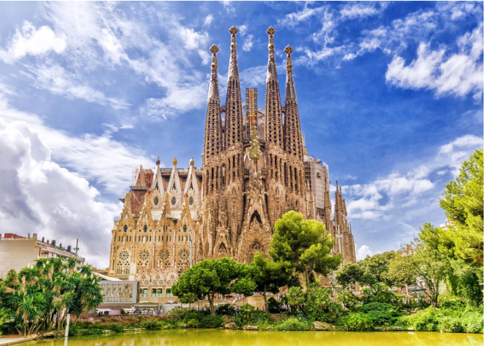

Sagrada Família

A Sagrada Família é o monumento mais conhecido e característico de Barcelona. Como máximo expoente da arquitetura modernista criada por Gaudí, milhares de turistas vão todos os dias contemplar o curioso e inacabado templo.
Como máximo expoente da arquitetura modernista criada por Gaudí, milhares de turistas visitam a Sagrada Família todos os dias para contemplar o curioso templo, ainda inacabado.
O início da Sagrada Família
A construção começou em 1882 com um estilo neogótico. Um ano depois, o projeto foi colocado nas mãos de Gaudí, que fez um replanejamento completo. Gaudí desenhou um templo excepcional e inovador que inicialmente estaria formado por 18 torres, mas teve tempo apenas de criar uma delas antes da sua morte.
Gaudí faleceu em 1926, deixando inacabado o projeto em que trabalhou nos últimos anos de sua vida, mas, graças aos planos que deixou, seu sonho se torna realidade pouco a pouco graças ao trabalho de outros artistas e ao dinheiro obtido a partir das doações e visitas.
Elementos mais destacados
Embora não esteja terminada, a Sagrada Família é um exuberante templo carregado de simbolismo religioso. Esses são alguns dos pontos mais importantes:
As torres
Até o momento foram construídas 8 das 18 torres desenhadas por Gaudí. O arquiteto decidiu que doze delas seriam dedicadas aos Apóstolos, quatro aos Evangelistas, uma à Virgem Maria e outra a Jesus. Cada uma delas estará dotada de diferente altura em função da hierarquia religiosa que representam.
É possível ter acesso à parte superior de algumas das torres para contemplar a cidade do alto e ver alguns detalhes do exterior do templo a uma curta distância.
As fachadas
- Fachada do Nascimento: Dedicada ao nascimento de Cristo, trata-se de uma fachada profusamente decorada e cheia de vida.
- Fachada da Paixão: Um pouco mais austera e simples que as outras, reflete o sofrimento de Jesus durante a Crucificação.
- Fachada da Glória: A fachada principal, muito maior e mais monumental que o resto, representará a morte, o Juízo Final, a Glória e o inferno. Consciente de que não teria tempo para construí-la, Gaudí deixou prontos os rascunhos para que seus sucessores pudessem finalizar o trabalho.
O interior
Para desenhar o interior da Sagrada Família, Gaudí se inspirou nas formas da natureza, criando colunas com forma de tronco de árvore que transforam o interior do templo em um enorme bosque de pedra.
Quando terminará a construção do templo?
É muito comum a pergunta sobre quando terminará a Sagrada Família de Barcelona, e é uma questão muito difícil de responder. Desde o seu início, em 1882, foi um templo expiatório, ou seja, construído a partir de doações. É por isso que a data de término da Sagrada Família poderia estar ainda bastante longe.
Visita guiada
A Basílica da Sagrada Família se tornou o símbolo de Barcelona e sua visita é imprescindível. Como sempre costuma haver muita fila para visitá-la, você pode comprar os ingressos online para não perder tempo à espera para entrar.
Para conhecer a fundo a Sagrada Família, nada melhor que contratar nossa visita guiada em inglês e espanhol. Você desfrutará de uma hora e meia de passeio acompanhado de um guia apaixonado por Barcelona e ainda vai furar as intermináveis filas. Você também pode reservar a visita com a subida às torres.
Voltar a página inicial